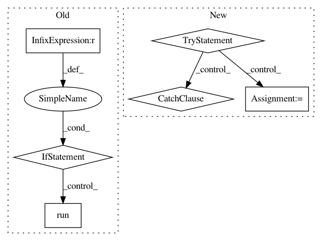

98cf326ac0db20159996a1095ff1e8dba80b0465,sos/actions.py,,sos_run,#Any#,481
Before Change
// been changed and need to be re-prepared) so it is necessary to prepare
// the workflow at run mode.
//
if env.__task_engine__ is None:
if env.max_jobs == 1:
return Base_Executor(wf, args=env.sos_dict["__args__"], nested=True).run()
else:
return MP_Executor(wf, args=env.sos_dict["__args__"], nested=True).run()
elif env.__task_engine__ == "rq":
return RQ_Executor(wf, args=env.sos_dict["__args__"], nested=True).run()
elif env.__task_engine__ == "celery":
return Celery_Executor(wf, args=env.sos_dict["__args__"], nested=True).run()
elif env.run_mode == "interactive":
raise RuntimeError("Action sos_run is not supported in interactive mode")
@SoS_Action(run_mode=["run", "interactive"])
After Change
// Grab the function that is the actual plugin.
name = entrypoint.name
if name == env.__task_engine__:
try:
executor_class = entrypoint.load()
except Exception as e:
print("Failed to load queue executor {}: {}".format(entrypoint.name, e))
if not executor_class:
sys.exit("Could not locate specified queue executor {}".format(env.__task_engine__))
else:
if env.max_jobs == 1:
In pattern: SUPERPATTERN
Frequency: 3
Non-data size: 6
Instances
Project Name: vatlab/SoS
Commit Name: 98cf326ac0db20159996a1095ff1e8dba80b0465
Time: 2016-11-19
Author: ben.bog@gmail.com
File Name: sos/actions.py
Class Name:
Method Name: sos_run
Project Name: ilastik/ilastik
Commit Name: 31be93ffb4abba92ada7a511a7cd7031df42279c
Time: 2013-12-12
Author: bergs@janelia.hhmi.org
File Name: tests/testOpExportSlot.py
Class Name:
Method Name:
Project Name: ilastik/ilastik
Commit Name: 6ceb6c78418b099238edf5300706fa683bccbb10
Time: 2013-06-12
Author: webmaster@burgerdev.de
File Name: tests/testOpInterpMissingData.py
Class Name:
Method Name: